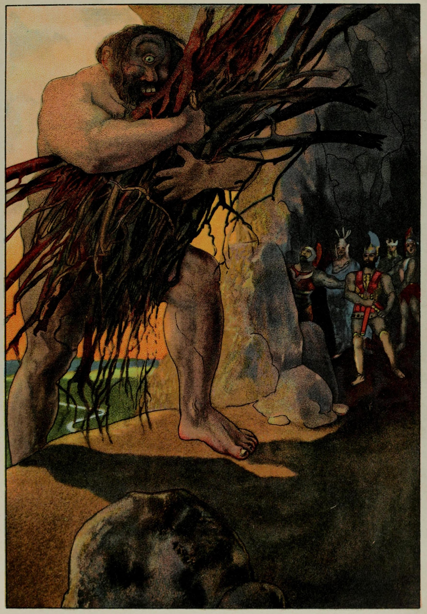

We lit a fire, burnt an offering, and took some cheese to eat; then sat in silence around the embers, waiting. When he came he had a load of dry boughs on his shoulder to stoke his fire at suppertime. He dumped it with a great crash into that hollow cave, and we all scattered fast to the far wall. Then over the broad cavern floor he ushered the ewes he meant to milk. He left his rams and he goats in the yard outside, and swung high overhead a slab of solid rock to close the cave. Two dozen four wheeled wagons, with heaving wagon teams, could not have stirred the tonnage of that rock from where he wedged it over the doorsill.
Next he took his seat and milked his bleating ewes. A practiced job he made of it, giving each ewe her suckling; thickened his milk, then, into curds and whey, sieved out the curds to drip in withy baskets! and poured the whey to stand in bowls cooling until he drank it for his supper. When all these chores were done, he poked the fire, heaping on brushwood. In the glare he saw us.